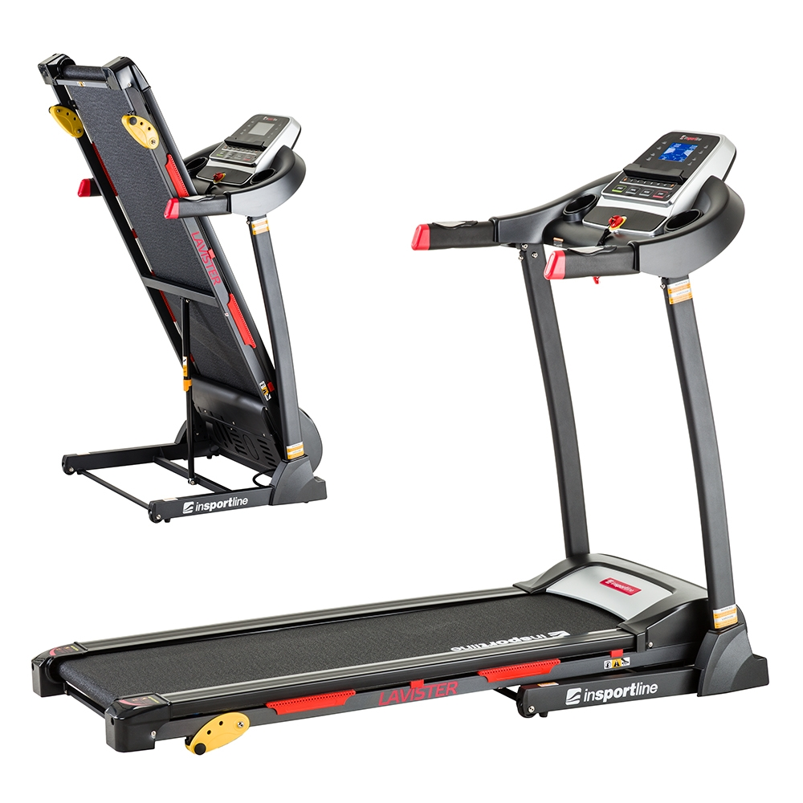

Welcome to Bėgimo takelis
Profesionalūs ir namų bėgimo takeliai. Ko gero geriausios kainos!
2020.10.30 05:11Apie mus Pristatymas Atsiskaitymas Kontaktai Užsakymo sekimas Prisijungti Registruotis
Registruokites
Registruokites ir naudokites lojalaus kliento programa!
Sukurti paskyrąPrisijunkite
0 Krepšelis 0 prekių Filtrai Sporto šakos Aerobika ir joga Treniruočių kilimėliai Aerobikos, viniliniai hanteliai Stepai, dekai Kamuoliai mankštai Greičio šokdynės Plytelės, volai Balanso treniruokliai Aerobikos ir jogos aksesuarai Aerobikos lazdos Medicininiai kamuoliai Espanderiai ir pasipriešinimo gumos Štangučių komplektai Aerobikos ir jogos stovai ir sandėliavimo sprendimai Dėvimi svoriai Gimnastika Gimnastikos lankai Gimnastikos čiužiniai Sienelės ir suoliukai Gimnastikos aksesuarai Gimnastikos kamuoliai Komandinis sportas Krepšinio įranga ir inventorius Futbolo įranga ir inventorius Tinklinio įranga ir inventorius Jėgos sportas Crossfit įranga ir inventorius Sunkioji atletika Jėgos trikovė Kovinis sportas Bokso įranga ir inventorius Kikboksas, MMA Rankų lenkimas Rakečių sportas Stalo tenisas Teniso įranga ir inventorius Badmintonas Treniruokliai, fitnesas Kardio treniruokliai Bėgimo takeliai Elipsiniai treniruokliai Dviračiai treniruokliai Dviračiai treniruokliai su nugaros atrama Grupinių treniruočių dviračiai Laiptiniai treniruokliai ir steperiai Irklavimo treniruokliai Slidinėjimo treniruokliai ,,Crossfit kardio treniruokliai Funkcinių treniruočių įranga ir inventorius Funkcinių treniruočių sistemos ir jų priedai Traukimo / stūmimo rogės ir jų priedai Jėgos treniruočių maišai ,,Powerbag Pasunkinti kamuoliai Funkcinės šuolių platformos Funkciniai diržai Funkcinių treniruočių aksesuarai Jėgos treniruokliai Daugiafunkciniai treniruokliai Laisvų svorių jėgos centrai Jėgos treniruočių narvai Treniruokliai su savo kūno svoriu Štangų stovai Smito staklės Lygiagretės Skersiniai Grifai Olimpiniai grifai - 50 mm. Olimpinių grifų užraktai - 50 mm. Grifai - 30 mm. Grifų užraktai - 30 mm. Grifų priedai Komplektai namams Suoliukai Atsilenkimų suoliukai Štangos spaudimo suoliukai Universalūs suoliukai Horizontalūs suoliukai Romėniški, nugaros suoliukai Bicepsų suoliukai Suoliukų priedai Kiti treniruočių suoliukai Pečių spaudimo suoliukai Blauzdų suoliukai 90 laipsnių kampo suoliukai Treniruočių priedai Priedai kojų treniruotėms Traukimo rankenos Laisvi svoriai Svoriai štangoms Svoriai su 30 mm įvore Svoriai su 50 mm įvore Hanteliai Fiksuoto svorio štangos Giros Štangų komplektai Stovai ir sandėliavimo sprendimai Hantelių Girų Kamuolių Svorių Štangų Kiti stovai ir sandėliavimo sprendimai Fiksuotų štangų Platformos Sunkiajai atletikai Jėgos trikovei Parolimpinės Garso ir vibracijos mažinimui Pusiniams narvams Sporto klubams Profesionalūs kardio treniruokliai Profesionalūs bėgimo takeliai Profesionalūs elipsiniai treniruokliai Profesionalūs dviračiai treniruokliai Profesionalūs dviračiai treniruokliai su nugaros atrama Profesionalūs grupinių treniruočių dviračiai Profesionalūs laiptiniai treniruokliai ir steperiai Profesionalūs irklavimo treniruokliai Profesionalūs slidinėjimo treniruokliai Profesionalūs ,,Crossfit kardio treniruokliai Profesionalūs olimpiniai grifai Profesionalūs, olimpiniai, tiesūs grifai Profesionalūs, olimpiniai, lenkti grifai Profesionalūs, įvairūs grifai Profesionalūs grifų užraktai Profesionalūs grifų priedai Profesionalūs olimpiniai technikos atlikimo grifai Profesionalūs jėgos treniruokliai Profesionalūs, selektorizuoti jėgos centrai Profesionalūs daugiafunkciniai treniruokliai Profesionalios kabelinės sistemos Profesionalūs, laisvų svorių jėgos centrai Profesionalūs, jėgos treniruočių narvai Profesionalūs jėgos centrai su savo kūno svoriu Profesionalios smito staklės Profesionalūs štangų stovai Profesionalūs skersiniai Profesionalios lygiagretės Profesionalios platformos Profesionalios sunkiosios atletikos platformos Profesionalios jėgos trikovės platformos Profesionalios parolimpinės platformos Profesionalios platformos garso ir vibracijos mažinimui Profesionalios, įterpiamos platformos pusiniams narvams Profesionalūs laisvi svoriai Profesionalūs svoriai štangoms Profesionalūs hanteliai Profesionalios fiksuoto svorio štangos Profesionalios giros Profesionalūs štangos komplektai Profesionalūs stovai ir įrangos sandeliavimo sprendimai Profesionalūs hantelių stovai Profesionalūs girų stovai Profesionalūs kamuolių stovai Profesionalūs svorių stovai Profesionalūs grifų stovai Profesionalūs, fiksuotų štangų stovai Profesionalūs stovai kitai įrangai Profesionalūs priedai treniruokliams ir treniruotėms Profesionalios traukimo rankenos Profesionalūs kojų treniruočių priedai Profesionali grupinių treniruočių įranga ir inventorius Stepai, dekai, skirti komerciniam naudojimui Profesionalūs kilimėliai ir aksesuarai Įrangos stovai ir sandėliavimo sprendimai Profesionalūs štangų komplektai Profesionalūs suoliukai Profesionalūs štangos spaudimo suoliukai Profesionalūs atsilenkimų suoliukai Profesionalūs universalūs suoliukai Profesionalūs romėniški, nugaros suoliukai Profesionalūs bicepsų suoliukai Profesionalūs įvairūs suoliukai Profesionalūs pečių spaudimo suoliukai Profesionalūs blauzdų suoliukai Profesionalūs, horizontalūs suoliukai Profesionalūs, 90 laipsnių kampo suoliukai Profesionalių suoliukų priedai Profesionali funkcinių treniruočių įranga ir inventorius Profesionalios funkcinės sistemos ir jų priedai Profesionalios traukimo / stūmimo rogės ir jų priedai Profesionalūs jėgos treniruočių maišai ,,Powerbag Profesionalūs pasunkinti kamuoliai Profesionalios šuolių platformos Profesionalūs funkcinių treniruočių aksesuarai Lauko įranga Lauko įranga jėgos treniruotėms Lauko laisvų svorių treniruokliai Lauko treniruokliai su savo kūno svoriu Lauko funkcinės ir skersinių sistemos Lauko sukomplektuotos funkcinės sistemos Lauko funkcinių sistemų priedai Lauko skersinių sistemos Lauko skersinių sistemų dalys ir priedai Lauko baldai Krepšinio prekės Prekiniai ženklai Evolve įranga ir inventorius Evolve kardio treniruokliai Evolve jėgos treniruokliai Evolve suoliukai Evolve grifai ir užraktai Evolve laisvi svoriai Evolve stovai ir sandėliavimo sprendimai Evolve funkcinių treniruočių įranga Evolve platformos Evolve sportinė danga Elite Impulse Impulse profesionalūs kardio treniruokliai Impulse profesionalūs jėgos treniruokliai Impulse profesionalios funkcinės sistemos Impulse Impulse profesionalūs kardio treniruokliai Impulse profesionalūs jėgos treniruokliai Impulse profesionalios funkcinės sistemos Sports Art Sports Art kardio treniruokliai Sports Art jėgos treniruokliai Eleiko įranga ir inventorius Eleiko grifai ir užraktai Eleiko svorių diskai Eleiko štangos komplektai Eleiko hanteliai Eleiko giros Eleiko platformos Eleiko suoliukai ir jėgos treniruokliai Eleiko komplektai namams Marbo Sport Marbo Sport suoliukai Marbo Sport narvai ir funkcinės sistemos Marbo Sport laisvų svorių treniruokliai Marbo Sport skersiniai ir lygiagretės Marbo Sport štangų stovai Marbo Sport selektorizuoti jėgos centrai Trendy Sport Trendy Sport kilimėliai ir aksesuarai Trendy Sport grupinių treniruočių įranga ir inventorius Intenza įranga ir inventorius Serija 550 Serija 450 Eleiko įranga ir inventorius Eleiko grifai ir užraktai Eleiko svorių diskai Eleiko štangos komplektai Eleiko hanteliai Eleiko giros Eleiko platformos Eleiko suoliukai ir jėgos treniruokliai Eleiko suoliukai Eleiko narvai ir štangų stovai Eleiko laisvų svorių treniruokliai Eleiko komplektai namams Concept2 įranga ir inventorius Reebok įranga ir inventorius DK City įranga ir inventorius XEBEX FITNESS Unlimited H5 Akcijos Projektai Menu Mano paskyra Prisijungti + Sporto šakos Aerobika ir joga Gimnastika Jėgos sportas Komandinis sportas Kovinis sportas Rakečių sportas + Treniruokliai, fitnesas Kardio treniruokliai Jėgos treniruokliai Suoliukai Laisvi svoriai Grifai Stovai ir sandėliavimo sprendimai Platformos Funkcinių treniruočių įranga ir inventorius Treniruočių priedai Komplektai namams + Sporto klubams Profesionalūs kardio treniruokliai Profesionalūs jėgos treniruokliai Profesionalūs olimpiniai grifai Profesionalūs suoliukai Profesionalūs laisvi svoriai Profesionalūs stovai ir įrangos sandeliavimo sprendimai Profesionali funkcinių treniruočių įranga ir inventorius Profesionalūs priedai treniruokliams ir treniruotėms Profesionali grupinių treniruočių įranga ir inventorius Profesionalios platformos Profesionali sportinė danga + Prekiniai ženklai Evolve įranga ir inventorius Elite Impulse Sports Art Marbo Sport HMS įranga ir inventorius Steelflex įranga ir inventorius Eleiko įranga ir inventorius Concept2 įranga ir inventorius Reebok įranga ir inventorius LifeTime įranga ir inventorius DK City įranga ir inventorius XEBEX FITNESS Unlimited H5 Trendy Sport Crossmaxx įranga ir inventorius Intenza įranga ir inventorius Naujienos Akcijos Klientų aptarnavimas Pasirinkti filtrai Žiūrėti produktus 40 valyti filtravimą Pagrindinis Treniruokliai, fitnesas Kardio treniruokliai Bėgimo takeliaiBėgimo takeliai
Profesionalūs ir namų naudojimo bėgimo takeliai – ko gero mėgstamiausi visų sporto entuziastų kardio treniruokliai. Jie lengvai naudojami, puikiai tinka tiek vaikščiojimui, tiek bėgimui į kalną ar tiesiu paviršiumi. Bėgimo takelis namuose lengvai integruojamas į kasdienes treniruotes, o dauguma jų turi širdies ritmo matavimo funkciją, kuri leidžia lengvai pasiekti norimų tikslų.
Niekas nepakeis bėgiojimo lauke gražiomis dienomis, tačiau oras dažnai nuvilia, tad namuose labai patogu visuomet turėti bėgimo takelį, kad galėtumėte kada panorėję treniruotis. Mūsų siūlomi profesionalūs bėgimo takeliai skirti atlaikyti nuolatinę apkrovą tausojant jūsų sąnarius. Bėgimo takelio platforma ir integruotos amortizacijos sistemos patikimai išsklaidys kiekvieno jūsų žingsnio jėgą ir leis treniruotis tarsi bėgant natūralia bekele danga. Elektrinis bėgimo takelis leis labai paprastai keisti įkalnę ir greitį , tad šie bėgimo takeliai lengvai prisitaikys prie jūsų tempo, o siekiantiems ieškantiems ekonomiško varianto namų naudojimui puikiai tiks mechaninis bėgtakis. Kitur radote mažesnę to paties bėgimo takelio kainą? Susisiekite ir pasiūlysime Jums mažesnę kainą.
Palyginti ( 0 ) Rodoma 1-24 iš 40 prekės(-ių) Naujienos Pavadinimas, A - Z Pavadinimas, Z - A Nuo pigiausios Nuo brangiausios SandėlyjeEvolve EV-HT-150 bėgimo takelis
Evolve bėgimo takelis namų naudojimui su 1,5 AG nuolatinės galios varikliu, maksimaliu... *Įsigykite išsimokėtinai 15.52 € / mėn Įtraukti į palyginimą 372,39 € -24 % Sutaupote 117.60 € 489,99 €Evolve EV-HT-175 bėgimo takelis
Evolve bėgimo takelis namų naudojimui su galingu varikliu, kuris maksimaliai pasiekia... *Įsigykite išsimokėtinai 18.45 € / mėn Įtraukti į palyginimą 442,79 € -18 % Sutaupote 97.20 € 539,99 €Reebok Astroride A2.0 bėgimo takelis su LED konsole
Reebok Astroride A2.0 bėgimo takelis su ryškia ir lengvai valdoma LED konsole, kurioje... *Įsigykite išsimokėtinai 20.67 € / mėn Įtraukti į palyginimą 495,99 € -38 % Sutaupote 304.00 € 799,99 €Reebok Astroride A4.0 bėgimo takelis su LED konsole
Reebok Astroride A4.0 bėgimo takelis su ryškia ir lengvai valdoma LED konsole, kurioje... *Įsigykite išsimokėtinai 29.17 € / mėn Įtraukti į palyginimą 699,99 € -30 % Sutaupote 300.00 € 999,99 €Reebok Jet 100 bėgimo takelis su LED konsole
Reebok Jet serijos bėgimo takelis Jet 100 su Air Motion technologija bei 130 x 43 cm... *Įsigykite išsimokėtinai 32.05 € / mėn Įtraukti į palyginimą 769,30 € -30 % Sutaupote 329.70 € 1 099,00 €HMS BE4545 bėgimo takelis
Bėgimo takelis HMS BE4545 – kompaktiškas treniruoklis namams. Mažas treniruoklio dydis... *Įsigykite išsimokėtinai 34.13 € / mėn Įtraukti į palyginimą Plačiau 819,00 €HMS BE5856 bėgimo takelis
Šis bėgimo takelis su galingu 3.0 AG variklius leis pasiekti net iki 18 km/h greitį.... *Įsigykite išsimokėtinai 39.54 € / mėn Įtraukti į palyginimą Plačiau 949,00 €Reebok Astroride A4.0 bėgimo takelis su lietimui jautria 10,1 colių konsole
Reebok Astroride A4.0 bėgimo takelis su 10.1" lietimui jautria konsole - YouTube,... *Įsigykite išsimokėtinai 39.58 € / mėn Įtraukti į palyginimą 949,99 € -32 % Sutaupote 450.00 € 1 399,99 €HMS BE4502 bėgimo takelis
Šis technologiškai modernus HMS bėgimo takelis BE4502 turintis didžiulį bėgimo diržą... *Įsigykite išsimokėtinai 41.63 € / mėn Įtraukti į palyginimą Plačiau 999,00 €Evolve EV-HT-6132 bėgimo takelis
Evolve bėgimo takelis puikiai tinka naudoti komercinės paskirties sporto klubuose,... *Įsigykite išsimokėtinai 49.58 € / mėn Įtraukti į palyginimą 1 189,99 € -32 % Sutaupote 560.00 € 1 749,99 €Reebok Jet 300+ bėgimo takelis su 10.1 lietimui jautria konsole
Dinamiška konsolė, Air Motion Tech amortizacijos sistema – Reebok Jet 300+ bėgimo... *Įsigykite išsimokėtinai 49.96 € / mėn Įtraukti į palyginimą 1 199,00 € -14 % Sutaupote 200.00 € 1 399,00 €HMS BE8510i bėgimo takelis
HMS BE8510i bėgimo takelis aprūpintas inovatyviu kompiuteriu su galimybe prijungti savo... *Įsigykite išsimokėtinai 56.21 € / mėn Įtraukti į palyginimą Plačiau 1 349,00 €HMS BE5830 bėgimo takelis
HMS BE5830 PREMIUM bėgimo takelis skirtas intensyviam naudojimui namuose. Didelis... *Įsigykite išsimokėtinai 57.04 € / mėn Įtraukti į palyginimą Plačiau 1 369,00 €DK City DT-22 bemotoris bėgimo takelis
DK City DT-22 bemotoris bėgimo takelis su magnetiniu bei diržo stabdymo pasipriešinimo... *Įsigykite išsimokėtinai 74.96 € / mėn Įtraukti į palyginimą Plačiau 1 799,00 €HMS BE1862 bėgimo takelis su LED konsole
HMS BE1862 pusiau profesionalus bėgimo takelis tinkamas mažiems sporto klubas bei... *Įsigykite išsimokėtinai 102.46 € / mėn Įtraukti į palyginimą Plačiau 2 459,00 €Evolve profesionalus bėgimo takelis su LED konsole
Evolve profesionalus bėgimo takelis, kurio maksimali variklio galia net 5,8 AG. Bėgimo... *Įsigykite išsimokėtinai 104.13 € / mėn Įtraukti į palyginimą Plačiau 2 499,00 €Impulse Encore bėgimo takelis ECT7-22
Bėgimo takelis Impulse Encore ECT7-22 *Įsigykite išsimokėtinai 106.25 € / mėn Įtraukti į palyginimą Plačiau 2 550,00 €HMS BE6000 bėgimo takelis su lietimui jautria konsole
HMS BE6000 stabilus, galingas ir tvirtas pusiau profesionalus bėgimo takelis. Idealiai... *Įsigykite išsimokėtinai 108.29 € / mėn Įtraukti į palyginimą Plačiau 2 599,00 €Sports Art Foundation T615 bėgimo takelis
Sports Art bėgimo takelis T615, skirtas pusiau profesionaliam naudojimui. *Įsigykite išsimokėtinai 110.42 € / mėn Įtraukti į palyginimą Plačiau 2 650,00 €Evolve bėgimo takelis su 21,5 FULL HD lietimui jautria konsole
Išskirtinė kokybė ir aukščiausios klasės standartais paremtas profesionalus,... *Įsigykite išsimokėtinai 112.50 € / mėn Įtraukti į palyginimą 2 700,00 € -40 % Sutaupote 1,800.00 € 4 500,00 €Elite EL-PK17LT profesionalus bėgimo takelis su lietimui jautria 15,6 colių konsole
Elite profesionalus bėgimo takelis, kurio maksimali variklio galia net 5,8 AG. Bėgimo... *Įsigykite išsimokėtinai 120.79 € / mėn Įtraukti į palyginimą Plačiau 2 899,00 €Elite EL-CT215 bėgimo takelis su lietimui jautria 21,5 colių konsole
Unikalus Elite bėgimo takelis su 21'5 colių, lietimui jautria konsole. Ko gero... *Įsigykite išsimokėtinai 123.52 € / mėn Įtraukti į palyginimą 2 964,50 € -45 % Sutaupote 2,425.50 € 5 390,00 €Evolve EV-CT215 bėgimo takelis su lietimui jautria 21,5 colių konsole
Unikalus Elite bėgimo takelis su 21'5 colių, lietimui jautria konsole. Ko gero... *Įsigykite išsimokėtinai 134.75 € / mėn Įtraukti į palyginimą 3 234,00 € -40 % Sutaupote 2,156.00 € 5 390,00 €Sports Art Foundation T635A bėgimo takelis
Sports Art T635A bėgimo takelis, kurio varikliui suteikiama net 10 metų garantija. *Įsigykite išsimokėtinai 145.79 € / mėn Įtraukti į palyginimą Plačiau 3 499,00 € 1 2Į ką atkreipti dėmesį renkantis bėgimo takelį?
Bėgimo takelis namams Profesionalūs bėgimo takeliaiBėgimo takelis namams
Jei ieškote bėgimo takelio namų naudojimui, atkreipkite dėmesį į sandėliavimo patogumą. Ieškokite sulankstomų su transportavimo ratukais, kad po treniruotės iškart galėtumėte patogiai patraukti treniruoklį, kad šis neužimtų daug vietos. Kai kurie bėgimo takeliai namams net turi švelnaus nusileidimo sistemą, kurios dėka išlankstant nereikia žaloti nugaros - pakanka spustelėti koja rankenėlę.
Svarbu, kad variklis būtų galingas, nes nuo to priklauso ilgaamžiškumas ir darbo kokybė, ypač treniruojantis pilnu pajėgumu. Taip pat tokie bėgimo takeliai kur kas tyliau dirba.
Pasvarstykite, ar bus reikalinga multimedijos prieiga - kad treniruotės ilgiau išliktų įdomios ir nepabostų. Mūsų asortimente galite rasti su išmaniomis konsolėmis liečiamu ekranu, YouTube, WiFi, Spotify ir neribotomis pramogomis. Ekonominės klasės bėgimo takeliai taip pat gali pasiūlyti pramogų: integruotą MP3 grotuvo jungtį su kolonėlėmis, telefono ar planšetinio kompiuterio laikiklį.
Širdies ritmo matavimas bei širdies ritmo kontrolės programos (kai kardio treniruokliai automatiškai reguliuoja įkalnę ir greitį, kad pasiektumėte ir išlaikytumėte pasirinktą širdies ritmą) padeda lengviau pasiekti norimo tikslo - numesti svorio, pagerinti širdies ir kraujagyslių darbą, ištvermę.
Mankštintis kasdien ir judėti labai svarbu bet kokio amžiaus, o ypatingai vyresnio amžiaus žmonėms, tad kartais galingas bėgimo takelis nėra būtinas. Tuomet paprastas, lengviems pasivaikščiojimams pritaikytas ėjimo takelis - puiki išeitis. Įprastai tokie ėjimo takeliai pasižymi mažesnio galingumo varikliais bei mažesniu greičiu, kurio pakanka kasdienei mankštai. Reiktų apgalvoti, ar tokiai treniruotei bus reikalinga įkalnė - bėgimo takelio kaina su mechanine ar elektroniniu būdu reguliuojama įkalne bus šiek tiek didesnė, tačiau galėsite rinktis dinamiškesnes treniruotes, tačiau jei ieškote pigiau - rinkitės treniruoklį be įkalnės.
Profesionalūs bėgimo takeliai
Profesionalus bėgimo takelis dažnai gaminamas iš patvaresnių medžiagų, kurios ne tik ilgai tarnauja, bet ir reikalauja nedaug priežiūros. Renkantis bėgimo takelį komerciniam naudojimui sporto salėse vienas esminių aspektų – variklio galingumas. Nuo to labai priklauso ilgaamžiškumas. Galingas variklis ne tik pasiūlys didesnį greitį, tačiau ir bus kur kas ištvermingesnis ir reikalaus mažiau priežiūros, nei įprasti.
Atkreipkite dėmesį į amortizacijos sistemas – tai labai svarbu visiems, vertinantiems klientų sveikatą, nes šios technologijos saugo sąnarius nuo galimų traumų ir išsklaido smūgio jėgą.
Ilgos kardio treniruotės gali būti sudėtingos ir lengvai pabosti, tad pasirūpinkite savo klientų pramogomis - rinkitės bėgimo takelius su konsolėmis liečiamais ekranais, interneto prieiga. Mūsų asortimente net rasite ko gero vienintelį pasaulyje bėgimo takelį su belaidžiu telefono įkrovimu, tad klientams daugiau nebereikės rūpintis laidais.
Atkreipkite dėmesį į maksimalų vartotojo svorį. Jei sporto salėje užimtumas nemažas ir treniruokliai patiria nuolatinę apkrovą, rekomenduojama rinktis 180 kg maksimalų svorį atlaikančius kardio treniruoklius - tokiu būdu užtikrinsite, kad visi vartotojai galės treniruotis, o kartu pasirūpinsite rėmo patvarumu bei kokybe.
Funkcionalumas ir saugumas - dvi labai svarbios savybės, nuo kurių taip pat priklauso treniruotės kokybė ir patrauklumas vartotojui. Treniruojantis lankytojai dažnai su savimi nešiojasi muzikos grotuvus, telefoną, gertuvę, tad labai svarbu pasirūpinti, kad bėgimo takelis turėtų aksesuarų, gertuvės, telefono dėklus. Saugi zona bėgimo platformos šonuose - itin reikalingas sprendimas, padedantis išvengti nelaimingų atsitikimų, jei treniruotė staiga pasidarytų pernelyg sudėtinga.
Pradėkite gyvą pokalbį ir gaukite nemokama eksperto konsultaciją
bei išsirinkite labiausiai asmeniškai jums tinkančią prekę.
arba užpildykite paraišką ir mes su jumis susisieksime.
UAB MegasportasĮm. k.: 304975508
PVM. k.: LT100012443815
Šilutės pl. 101A, LT-95112, Klaipėda, Lietuva
+370 46 222881
info@mega-sport.lt
Šioje svetainėje naudojame slapukus. Jie padeda atpažinti prisijungusius vartotojus, analizuoti naršymo įpročius; taip mes galime keisti svetainę, kad ji būtų jums patogesnė.
Sutinku Plačiau E-commerce by elPresta.eu